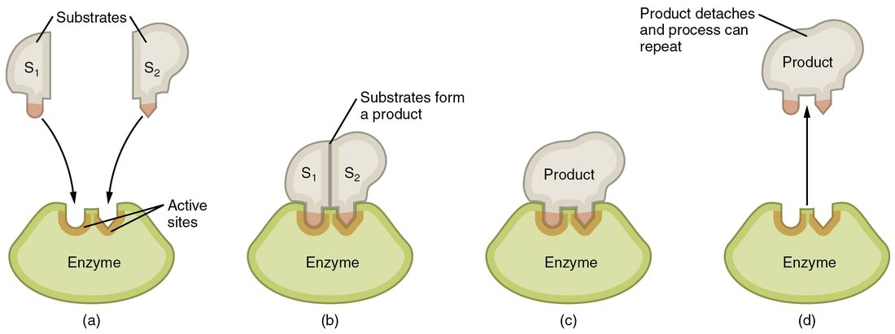

Energy, metabolism and enzymes
Energy is the capacity to do work.
Part 1 · Clinical hook
Why this matters
Mr. Nguyen, 45, drank windshield washer fluid from an unlabeled bottle two hours ago. The fluid contains methanol. He feels fine and his blood pH is normal, yet the emergency team gives him a drug called fomepizole right away. Methanol does little harm by itself: enzymes in his liver turn it, in two steps, into formic acid, which can drive his blood pH down and damage his vision. Fomepizole blocks the first of those enzymes.
Part 2 · Foundations
What this builds on
Part 3 · Prerequisite check
Quick check before you start
1. What happens to a protein when it is denatured?
- It loses its folded shape, and with it the ability to do its job
- It is split into its separate amino acids
- It gains extra phosphate groups
Show the answer
Denaturation unfolds a protein by breaking the weak bonds, such as hydrogen bonds, that hold its shape. The chain of amino acids stays intact, but a protein's job depends on its shape, so it stops working. Enzymes are proteins, so this matters on this page.
- Correct: It loses its folded shape, and with it the ability to do its job:
- It is split into its separate amino acids:
- It gains extra phosphate groups:
2. A solution's pH falls from 7.4 to 7.0. What happened to its hydrogen ion (H+) concentration?
- It fell
- It rose
- It stayed the same
Show the answer
pH goes down as H+ concentration goes up. A fall of 0.4 pH units means the H+ concentration rose about two and a half times. Enzymes are sensitive to these changes.
- It fell:
- Correct: It rose:
- It stayed the same:
3. In a chemical reaction, what are the substances you start with called?
- Products
- Solutes
- Reactants
Show the answer
Reactants are the starting substances, and products are what the reaction makes. A solute is a substance dissolved in a solution, whether or not it reacts.
- Products:
- Solutes:
- Correct: Reactants:
Part 4 · Anatomy panel
Anatomy

With labels hidden, select a box to reveal its label.
Part 5 · Causal chain
How it works, step by step
- A substrate molecule collides with an enzyme and fits into its active site.The substrate binds, and the enzyme changes shape slightly, closing around it.
- The closed active site holds the substrate in a strained, well-aligned position.The activation energy the reaction needs falls.
- With a lower activation energy, far more substrate molecules get over the energy hill each second.The reaction rate rises, often by a factor of a million or more.
- The newly formed products no longer fit the active site well.The products are released, and the unchanged enzyme binds a new substrate molecule.
Part 6 · Key ideas
Key ideas
- Energy is the capacity to do work. Potential energy is stored energy; kinetic energy is the energy of motion. Chemical energy is potential energy held in the arrangement of atoms and their bonds. An exergonic reaction (ex- = out, erg- = work) releases energy because its products hold less than its reactants; an endergonic reaction (end- = within) has products that hold more, so energy must be supplied.
- Metabolism (metabol- = change) is the sum of all the chemical reactions in your body. Catabolism (cata- = down) breaks large molecules into smaller ones and usually releases energy. Anabolism (ana- = up) builds large molecules from smaller ones and usually needs energy.
- ATP hydrolysis uses a water molecule to split the end phosphate off ATP, leaving ADP, a free phosphate and released energy. The energy does not sit in the broken bond, because breaking any bond takes energy. It is the drop from ATP to the more stable ADP and phosphate in water.
- A cofactor (co- = together) is a non-protein helper that an enzyme needs, often a metal ion such as magnesium. A coenzyme is an organic cofactor, often made from a vitamin, that carries atoms or electrons from one reaction to the next.
- Enzyme activity rises with temperature to a peak near 37 °C, then falls as heat unfolds the enzyme. More substrate raises the rate until every active site is busy nearly always; then extra substrate adds nothing. A competitive inhibitor resembles the substrate and binds the active site, so a large excess of substrate can crowd it out; a noncompetitive inhibitor binds elsewhere and bends the enzyme out of shape.
- Oxidation is the loss of electrons, and reduction is the gain of electrons. They always happen together, because electrons that leave one molecule must go to another. Energy travels with the electrons: the molecule that is oxidized usually loses energy, and the one that is reduced gains it.
Part 7 · Core concept
Core concepts
Part 8 · Misconception
A common mistake
The wrong idea: ATP stores its energy in a special high-energy bond, and breaking that bond releases the energy.
What actually happens: Breaking any chemical bond takes energy; it never releases it. ATP hydrolysis releases energy because its products, ADP and phosphate surrounded by water, are a more stable, lower-energy arrangement than ATP and water. The energy released is the difference between the two sides of the reaction, not something stored inside one bond.
Part 9 · Retrieval check
Check yourself
Anything you miss goes into your review queue.
1. What does an enzyme change about the reaction it catalyzes?
- The activation energy the reactants need to get over
- The total energy released when reactants become products
- The balance point the reaction settles at when it reaches equilibrium
- Whether the overall reaction releases energy or needs an energy input
Show the answer
An enzyme lowers the activation energy, the energy hill between reactants and products. It leaves the starting and ending energies, and so everything that depends on them, unchanged.
- Correct: The activation energy the reactants need to get over: Correct. The active site holds substrates in a strained, well-aligned position, which lowers the energy needed to reach the transition state.
- The total energy released when reactants become products: The energy released depends only on how much energy the reactants and products hold. The enzyme changes neither, so the energy released is the same with or without it.
- The balance point the reaction settles at when it reaches equilibrium: An enzyme speeds the forward and reverse reactions by the same factor. Equilibrium is reached sooner, but at the same balance point.
- Whether the overall reaction releases energy or needs an energy input: Whether a reaction is exergonic or endergonic is set by the energy of its reactants and products. An enzyme cannot make an endergonic reaction release energy; that reaction still needs energy, usually from ATP.
2. In a test tube, alcohol dehydrogenase is working slowly on a small amount of methanol in the presence of fomepizole, a competitive inhibitor. You add a large excess of methanol. What happens to the reaction rate?
- It stays low: the inhibitor has permanently changed the enzyme's shape
- It falls further: extra substrate crowds the enzyme and blocks the active site
- It rises: methanol molecules now outnumber the inhibitor at the active site
- It stays low: the enzyme was already working at its maximum rate
Show the answer
A competitive inhibitor and the substrate compete for the same active site. When substrate greatly outnumbers the inhibitor, substrate wins most encounters, so more active sites are doing the reaction and the rate rises.
- It stays low: the inhibitor has permanently changed the enzyme's shape: That describes a noncompetitive or permanent inhibitor. A competitive inhibitor binds the active site and comes off again; it does not change the enzyme's shape.
- It falls further: extra substrate crowds the enzyme and blocks the active site: The substrate is what the active site is built to bind, so more substrate means more reactions, not fewer. Crowding does not block the site.
- Correct: It rises: methanol molecules now outnumber the inhibitor at the active site: Correct. The inhibitor's effect depends on how often it, rather than the substrate, occupies the active site. Flooding the site with substrate outcompetes it.
- It stays low: the enzyme was already working at its maximum rate: The rate was low because the inhibitor occupied many active sites and substrate was scarce, not because every active site was busy with substrate. There was room to speed up.
3. A human enzyme and its substrate are held at 60 °C for 30 minutes, and the reaction is then measured at 60 °C. Predict each value compared with the same enzyme measured at 37 °C.
| Variable | Change |
|---|---|
| Enzyme molecules with a working active site | — |
| Rate of the catalyzed reaction | — |
| Energy released per reaction (products compared with reactants) | — |
Show the answer
Most human enzymes work best near 37 °C. Sustained heat well above that denatures them, so activity falls sharply, but the chemistry of the reaction itself, including the energy it releases, is unchanged.
- Enzyme molecules with a working active site: down. Heat far above 37 °C breaks the hydrogen bonds that hold the enzyme's folded shape. The protein unfolds (denatures), and its active site loses the shape the substrate fits.
- Rate of the catalyzed reaction: down. With fewer working active sites, fewer substrate molecules are converted each second. The speed-up from faster molecular motion is far outweighed by the loss of working enzyme.
- Energy released per reaction (products compared with reactants): no change. The energy released is set by the energy held in the reactants and products. Neither the enzyme nor its shape changes that; they change only how fast the reaction runs.
4. After a meal, your liver links many glucose molecules into glycogen. How is this reaction classified?
- Catabolic and exergonic
- Anabolic and exergonic
- Catabolic and endergonic
- Anabolic and endergonic
Show the answer
Joining small molecules into a large one is anabolism. Building a larger, more ordered molecule takes energy in, so the reaction is endergonic; your cells pay for it with ATP.
- Catabolic and exergonic: Catabolism breaks molecules down. Linking glucose into glycogen builds a larger molecule, and it takes energy rather than releasing it.
- Anabolic and exergonic: Building glycogen is anabolic, but it takes in energy, so it is endergonic, not exergonic.
- Catabolic and endergonic: The reaction does take energy in, but it builds a larger molecule, so it is anabolic, not catabolic.
- Correct: Anabolic and endergonic: Correct. It builds a larger molecule (anabolic) and needs an energy input (endergonic).
5. In an experiment with a fixed amount of enzyme, the substrate concentration is already high. Doubling it again does not change the reaction rate. What best explains this?
- Every active site is already occupied nearly all the time
- The extra substrate has started to denature the enzyme
- The reaction has become endergonic at high substrate levels
- The extra substrate has lowered the pH below the enzyme's optimum
Show the answer
Once every active site is busy almost all the time, the enzyme is working at its maximum rate. More substrate has nowhere to bind. Only more enzyme would raise the rate.
- Correct: Every active site is already occupied nearly all the time: Correct. With every active site busy, the enzyme cannot convert substrate any faster.
- The extra substrate has started to denature the enzyme: Substrate binds the active site; it does not unfold the enzyme. Denaturation comes from heat, extreme pH and similar changes.
- The reaction has become endergonic at high substrate levels: Whether a reaction releases or needs energy depends on its reactants and products, not on how much substrate is present.
- The extra substrate has lowered the pH below the enzyme's optimum: Nothing in the question suggests the substrate is an acid. The rate levels off even when pH is held constant, because the active sites are full.
6. Where does the energy released by ATP hydrolysis come from?
- From breaking the bond that holds the end phosphate onto ATP
- From the products (ADP and phosphate) holding less energy than ATP and water did
- From the ATPase adding its own energy as it splits ATP
- From heat taken up from the surrounding fluid
Show the answer
The energy released is the difference between the reactants (ATP and water) and the products (ADP and phosphate surrounded by water). The products are more stable, so they hold less energy, and the difference is released.
- From breaking the bond that holds the end phosphate onto ATP: Breaking a bond always takes energy. The release comes from the new, more stable arrangement of the products, not from the bond breaking.
- Correct: From the products (ADP and phosphate) holding less energy than ATP and water did: Correct. ATP's crowded negative phosphates make it a high-energy molecule; the products are more stable and lower in energy.
- From the ATPase adding its own energy as it splits ATP: An ATPase is an enzyme. It lowers the activation energy for the reaction but adds no energy of its own.
- From heat taken up from the surrounding fluid: ATP hydrolysis releases heat to its surroundings rather than taking it up.
7. An enzyme moves two electrons from NADH to molecule X. Which statement is correct?
- NADH is reduced and molecule X is oxidized
- Both molecules are oxidized: electrons are moving between them
- NADH is oxidized and molecule X is reduced
- Neither molecule changes: moving electrons is not a chemical reaction
Show the answer
NADH loses electrons, so it is oxidized (back to NAD+). Molecule X gains them, so it is reduced. Oxidation and reduction happen together in every redox reaction.
- NADH is reduced and molecule X is oxidized: This reverses the two. The molecule that gives up electrons is oxidized; the one that receives them is reduced.
- Both molecules are oxidized: electrons are moving between them: One molecule's loss is the other's gain, so one is oxidized and the other is reduced.
- Correct: NADH is oxidized and molecule X is reduced: Correct. Oxidation is loss of electrons (NADH) and reduction is gain (molecule X).
- Neither molecule changes: moving electrons is not a chemical reaction: A transfer of electrons is a redox reaction. Both molecules change: NADH becomes NAD+, and molecule X gains energy along with the electrons.
Part 10 · Summary
Summary
Energy is the capacity to do work. It is potential (stored, including chemical energy in bonds) or kinetic (motion, including heat). Metabolism is all your chemical reactions: catabolism breaks molecules down and usually releases energy (exergonic); anabolism builds molecules and usually needs energy (endergonic). ATP links the two: catabolism rebuilds ATP, and ATP hydrolysis or phosphorylation powers the work. Every reaction must first get over its activation energy. Enzymes, mostly proteins, bind their substrate at an active site and lower that barrier without being used up and without changing the energy released or the equilibrium. Temperature, pH, the amounts of substrate and enzyme, cofactors and coenzymes, and inhibitors all change enzyme activity. In oxidation a molecule loses electrons; in reduction it gains them; electron carriers such as NAD+ and FAD move those electrons, and the energy they hold, between reactions.
Part 11 · Up next
What comes next
Part 12 · Connections